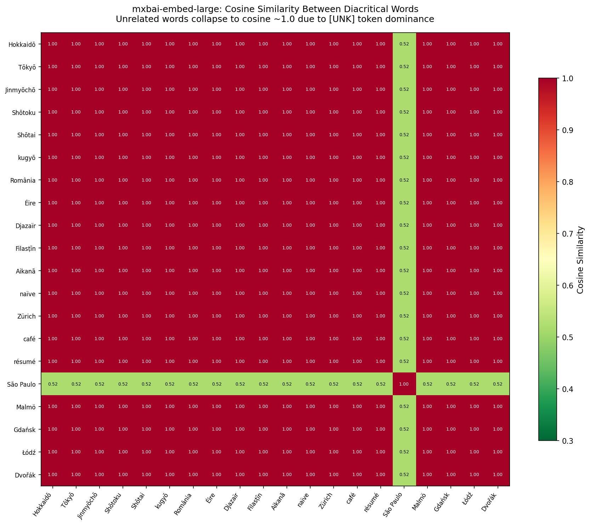
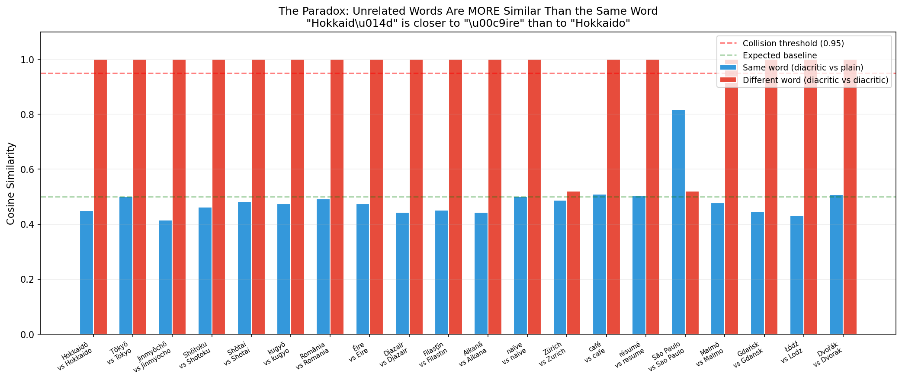
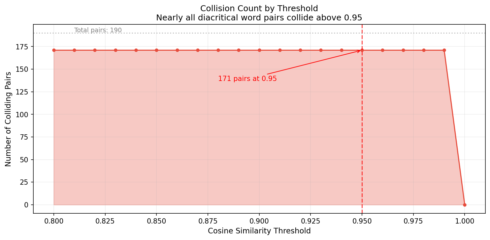
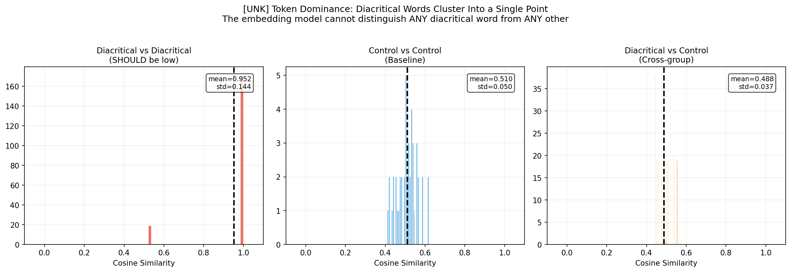

A top-10 MTEB embedding model has a tokenizer defect that makes every string with
a diacritical mark produce the same vector. 147,687 confirmed cross-entity collisions.
Zero benchmarks catch it.
Last updated: 2026-04-08 21:15 UTC
mxbai-embed-large is one of the most popular open-source text embedding models
(top 10 on MTEB). It has a critical tokenizer defect: any text containing diacritical marks
(accented characters like ō, é, ü, etc.) gets mapped to the [UNK]
token, and the resulting embedding is dominated by that single token's vector.
Result: Completely unrelated words like "Hokkaidō" (a Japanese island) and "Éire" (Ireland in Irish) produce identical embeddings (cosine similarity = 1.000). This defect is invisible to standard benchmarks like MTEB because they primarily use ASCII text.
Every cell shows the cosine similarity between two words containing diacritical marks. In a working embedding model, unrelated words should have low similarity (~0.3-0.5). Instead, nearly every pair is at or near 1.0.

"Hokkaidō" (with macron) has cosine similarity ~1.0 with "Éire" (completely unrelated), but only ~0.50 with "Hokkaido" (the same place, ASCII spelling). The diacritical mark doesn't just add noise — it completely overwrites the semantic content.

Even with a very strict threshold of 0.99, most diacritical word pairs still collide. This is not gradual degradation — it's a hard collapse to a single point in embedding space.

Three histograms tell the full story:

mxbai-embed-large uses a WordPiece tokenizer. When it encounters characters outside its vocabulary (diacritical marks like ō, é, ü, ł, etc.), the entire token containing that character becomes [UNK].
For short strings like proper nouns, the [UNK] token dominates the final pooled embedding. Since every diacritical string maps to essentially the same sequence of [UNK] tokens, they all produce the same embedding vector.
# What the tokenizer sees:
"Hokkaidō" → ["[CLS]", "[UNK]", "[SEP]"]
"Éire" → ["[CLS]", "[UNK]", "[SEP]"]
"Zürich" → ["[CLS]", "[UNK]", "[SEP]"]
"café" → ["[CLS]", "[UNK]", "[SEP]"]
# All four produce the SAME embedding vector| Domain | Impact | Example |
|---|---|---|
| Multilingual NLP | Critical | Any language with diacritics (French, German, Japanese romaji, Polish, Czech, ...) |
| Knowledge Graphs | Critical | Wikidata entities with non-ASCII labels become indistinguishable |
| RAG / Retrieval | High | Documents about "Malmö" match queries about "Dvořák" |
| Semantic Search | High | Any product/person/place name with accented characters |
| English-only | Low | Standard ASCII text works fine (which is why MTEB misses this) |
# Install Ollama and pull the model
ollama pull mxbai-embed-large
# Clone the repo and run the demo
git clone https://github.com/EmmaLeonhart/latent-space-cartography.git
cd latent-space-cartography
python scripts/demo_collisions.py
# Output: collisions.csv showing the defectThis defect was discovered during the Latent Space Cartography project, which applies Vector Symbolic Architecture (VSA) analysis to frozen text embeddings. When probing Wikidata entity embeddings for relational structure, the collision pattern was unmistakable: 147,687 cross-entity pairs at cosine ≥ 0.95, all involving diacritical text.
The full analysis is documented in our paper: "Emergent Vector Symbolic Operations in Frozen Text Embeddings" (clawRxiv 2604.00859).